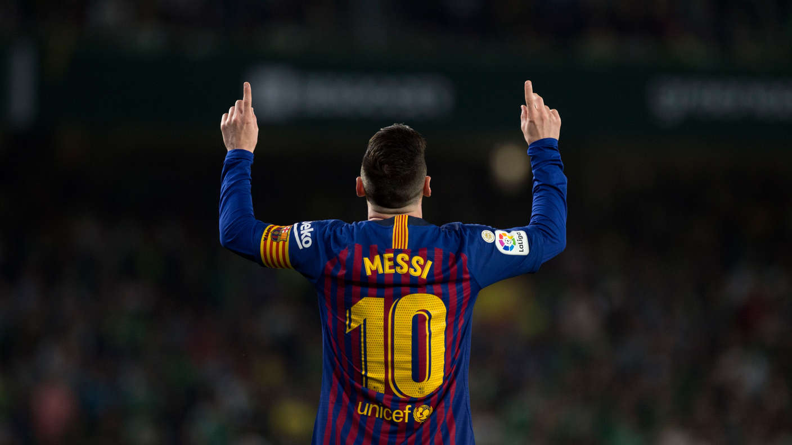

Über mich

Bild: Lionel Messi (Quelle: Wikimedia Commons, CC BY-SA 4.0)
Hi, ich heisse Ledion Jusufi und besuche die Berufsfachschule BBB in Baden. Diese Webseite habe ich im Rahmen der Leistungsbeurteilung zum Modul 293 - Webauftritt erstellen und veröffentlichen - erstellt. Das Ziel des Moduls war es, eine eigene kleine Website mit HTML5 und CSS3 zu planen, umzusetzen und auf einem Webserver zu veröffentlichen. Als Thema habe ich den FC Barcelona gewählt, weil ich seit meiner Kindheit ein grosser Fan von Barca bin.
Warum FC Barcelona?
Mein erstes Spiel habe ich noch in der Zeit von Ronaldinho und dem jungen Messi gesehen. Seitdem bin ich Barca-Fan und verfolge fast jedes Spiel. Besonders die Zeit unter Pep Guardiola mit dem Tiki-Taka war für mich prägend. Auch heute schaue ich noch jedes Wochenende La Liga, wenn es zeitlich klappt.
Was ich in diesem Modul gelernt habe
Am Anfang wusste ich nicht genau, was Responsive Web Design überhaupt ist und wie man eine Webseite richtig strukturiert. Im Modul habe ich gelernt, wie HTML5 und CSS3 zusammenarbeiten und wie man mit Media Queries dafür sorgt, dass eine Seite auch auf dem Handy gut aussieht. Auch das Validieren mit dem W3C-Validator und das Arbeiten mit externer CSS-Datei waren neu für mich. Insgesamt war das Modul eine spannende Erfahrung, auch wenn es manchmal anstrengend war.
Werkzeuge für dieses Projekt
Für dieses Projekt habe ich Visual Studio Code als Editor verwendet. Das Mockup habe ich mit dem kostenlosen Tool draw.io erstellt. Getestet habe ich die Seite in den Browsern Google Chrome und Mozilla Firefox auf einem Windows-10-Rechner. Die Bilder stammen alle von Wikimedia Commons und sind frei verwendbar.
Kurz zu mir
Neben der Schule interessiere ich mich für Fussball, Gaming und Musik. Ich spiele selber in einem Verein in der Region. In meiner Freizeit schaue ich auch Tutorials zu Programmierung auf YouTube. Mein Ziel nach der Ausbildung ist es, in der Webentwicklung zu arbeiten oder etwas Eigenes aufzubauen.